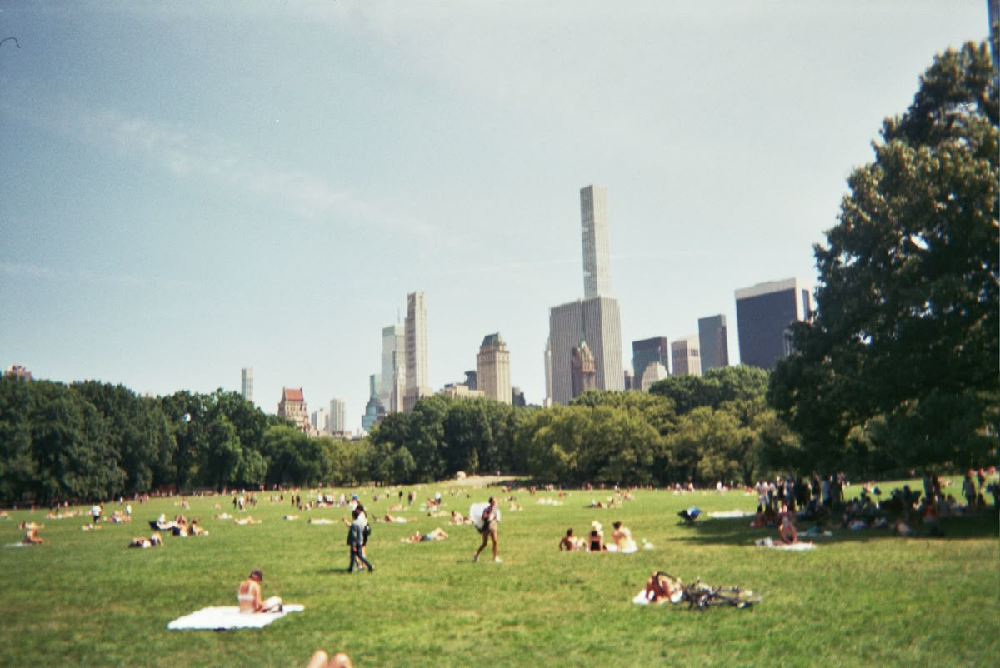
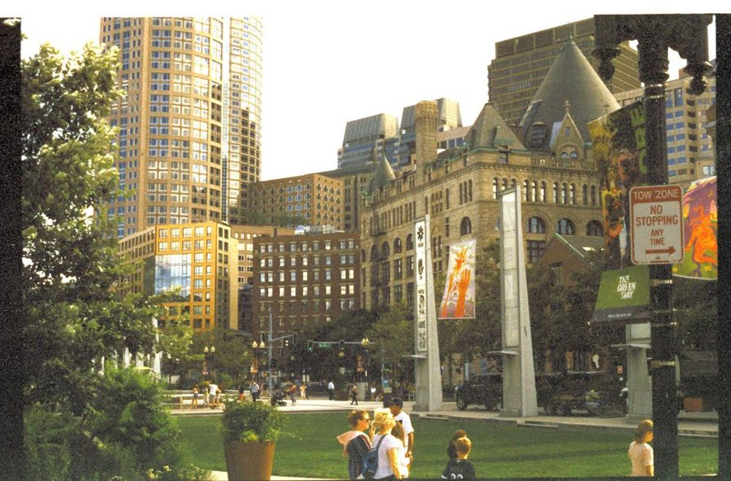
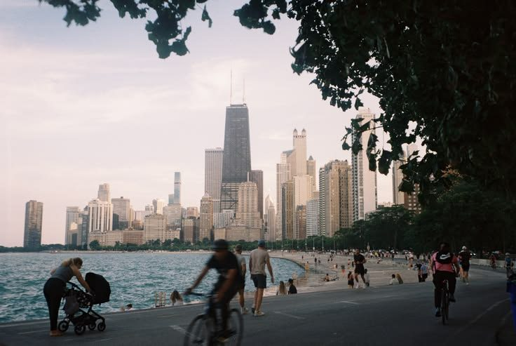

New York, NY
06.04.27 · Madison Square Garden

Boston, MA
06.07.27 · TD Garden
Los Angeles, CA
06.22.27 · Kia Forum
Philadelphia, PA
06.10.27 · Wells Fargo Center

Chicago, IL
06.14.27 · United Center